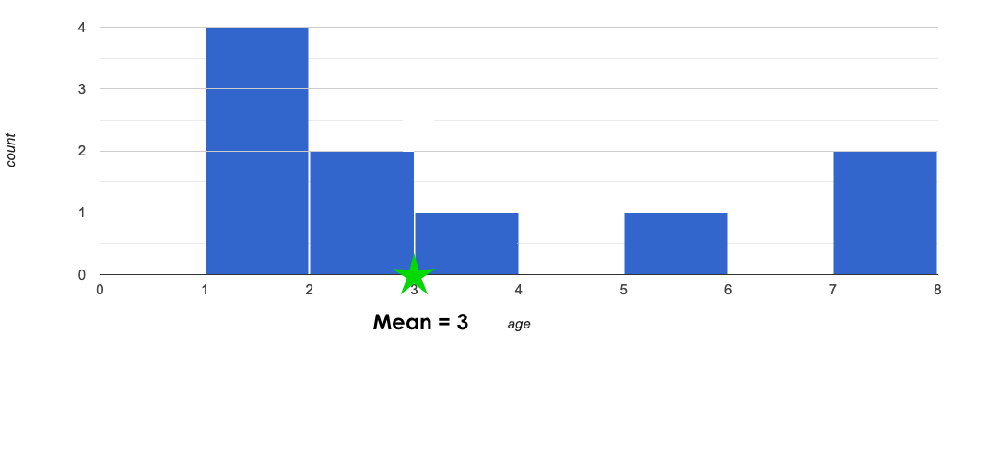
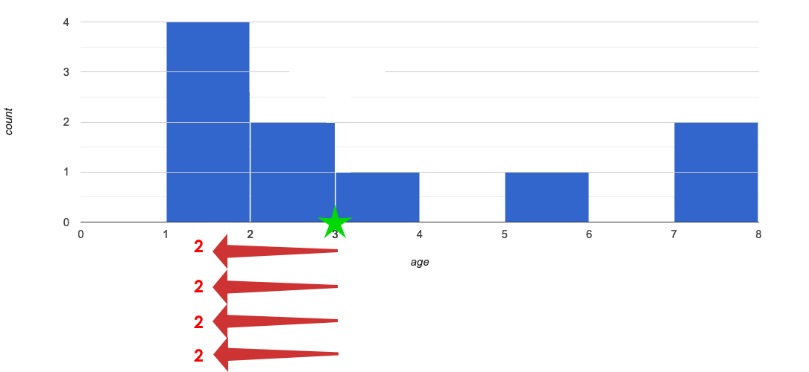
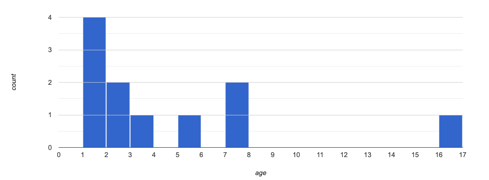

Standard Deviation
Students learn how standard deviation serves as Data Scientists' most common measure of "spread": how far all the values in a dataset tend to be from their mean. When we looked at box plots, we visualized spread based on range and interquartile range. Now we’ll return to histograms and picture the spread in terms of standard deviation.
|
Lesson Goals |
Students will be able to…
|
|
Student-facing Lesson Goals |
|
|
Materials |
|
|
Preparation |
All students should log into code.pyret.org (CPO) and open their saved "Animals Starter File". If they don’t have the file, they can open a new one from Animals Starter File. |
histogram-
a display of quantitative data that uses vertical bars positioned over bins (sub-intervals); each bar’s height reflects the count or percentage of data values in that bin.
mean-
a representation of the center, or 'typical' value in a set of numbers, calculated as the sum of those numbers divided by the number of values.
outlier-
observations whose values are very different from the other observations in the same dataset, perhaps due to experimental error. Outliers can also be indicative of data belonging to a different population from the rest of the established samples.
skew-
lack of balance in a dataset’s shape, arising from more values that are unusually low or high. Such values tend to trail off, rather than be separated by a gap (as with outliers).
spread-
the extent to which values in a dataset vary, either from one another or from the center
standard deviation-
a number that measures spread of a dataset using the typical distance of values from their mean
| Measuring "Deviance" | 30 minutes |
Overview
Students review the notion of spread itself, and build up to the formula by annotating histograms.
Launch
The Animal Shelter Bureau reports that the mean age of shelter cats is 3 years.
-
Look at the Animals Dataset in your student workbook, or the Animals Dataset spreadsheet (Google).
-
Does a mean age of 3 years translate to all of the cats being close to 3 years old? Why or why not?
-
No, we cannot assume all cats are close to 3 years old. There are some outliers in the dataset.
-
In the activity that follows, students will look at ten cats from the shelter to consider the distribution of their ages.
-
Turn to Computing Standard Deviation, and complete numbers 1-3.
-
What did you get for the mean? Does it match what the Animal Shelter Bureau says?
-
The mean is 3; yes, it matches what the Animal Shelter Bureau says.
-
-
Can you think of four ages, such that the mean age for all of them is 3?
-
Some possibilities include: {3,3,3,3}, {1,2,4,5}, {1,1,4,6}… any four ages that add up to 12 will work!
-
-
Can you think of a different spread of four ages that would have the same mean?
-
See above.
-
-
How many different sets of four ages can you think of, which all have a mean of 3?
Without a measure of spread, just knowing the mean doesn’t tell us enough about the shape of the data. When summarizing a column, we’d like to use a measure that gathers data from every value. We already have one method of measuring spread: calculating the Five Number Summary and using it to generate a box-plot. Unfortunately, that measure comes from only a small number of data points! If possible, we’d like to have a measure that summarizes the spread across all the points.
Standard deviation is the most useful way to summarize spread of a quantitative column.
Instead of focusing on the handful of datapoints used in our Five Number Summary, another way to measure spread is to focus on the "typical" distance from the mean. In other words, we want to know what kind of deviation is "standard" for all the points.
Investigate

{kind=link}
How far away is each data point from 3?

{kind=link}
Next, complete numbers 4 to 6 of Computing Standard Deviation.
|
Mean Average Deviation? In this section of the worksheet, students will need to stretch their visual imaginations a bit! In problem number 6, they are asked to summarize all 10 distances from the mean into a single number. The goal here is for students to make an educated guess about standard deviation (SD) before learning the algorithm for computing it. Invite and encourage discussion about students' different approaches for guessing at the best summary number before sharing the key idea about standard deviation! Students are likely to hone in on the Mean Average Deviation, or MAD. Both SD and MAD measure variability or "spread" by computing individual deviations from the mean, but MAD averages these deviations and SD transforms them via square/square-root. |
To compute the standard deviation we square each distance and take the average, then take the square root of the average.
The process of finding standard deviation manually is a bit laborious. Keeping organized is crucial; a partially-completed table is provided on the bottom half of worksheet to support students in doing so.
-
Complete numbers 7-10 of Computing Standard Deviation, where you will utilize the algorithm for computing standard deviation.
Now that you know how to compute standard deviation on your own, here is the contract for stdev, along with an example that will calculate the standard deviation for the pounds column in the animals-table:
# stdev :: (t :: Table, col :: String) -> Number
stdev(animals-table, "pounds")-
What is the standard deviation for the weights of all the animals at our dataset?
-
Approximately 48.5
-
Optional: For additional practice, have students complete Computing Standard Deviation (2).
Synthesize
-
Can you explain why two datasets can have the same mean, but different standard deviations?
-
Mean is a measure of central tendency, whereas standard deviation measures the variation of some sample.
-
-
What kind of dataset would have a standard deviation of zero?
-
A standard deviation of zero means that every number in the sample is exactly the same.
-
| Comparing Standard Deviations | 20 minutes |
Overview
Students compare centers and (more importantly) spreads - of two quantitative datasets by comparing their histograms. Both mean and standard deviation can be affected by outliers and/or skewness.
Launch
Invite students to take a look at the histogram below. It is the same histogram we saw in the previous section, but now with an 11th cat that is 16 years old. That’s quite an outlier!

{kind=link}
-
What is the shape of this histogram?
-
The histogram has high outliers, therefore it is skewed right.
-
-
How does it differ from the one we just looked at?
-
The previous histogram - with the 16-year-old cat omitted - was roughly symmetric.
-
-
Turn to The Effect of an Outlier to explore the extent to which the inclusion of an outlier will affect the center and spread of a quantitative dataset.
-
What did this outlier do to the mean? Refer back to Computing Standard Deviation to help you.
-
Previously, the mean was 3; now it is approximately 4.33.
-
-
What did this outlier do to the standard deviation?
-
The outlier caused the standard deviation to increase by about 1.33.
-
-
Optional: To see how changes in data values affect the mean and standard deviation, complete Matching Mean & Standard Deviation to Data.
Investigate
The mean and standard deviation tell us where the data is centered and how far the data strays from that center. For example, when writing about the ages of cats in our shelter, we might say "the mean age is 3 and the standard devation is 2.4, so most cats are between the ages of 1 and 5 years old."
-
The mean time-to-adoption is 5.75 weeks. Does that mean most animals generally get adopted in 4-6 weeks? Solicit students' ideas, but do not reveal the answer.
-
Turn to Data Cycle: Standard Deviation in the Animals Dataset to get some practice using the Data Cycle to answer this question, then write your findings in the space at the bottom.
|
Mean Average v. Standard Deviation MAD and SD are both measures of a certain kind of distance, literally asking "how are far from the mean are all the points in the dataset?". With each point being independent from the other, we can imagine a dataset with two points as a right triangle with two legs: how far apart are these points? Before learning the distance formula, students might guess at a number of ways to compute the hypotenuse. They can quickly rule out the sum of the legs, and the difference between them. At some point they might suggest averaging the lengths of the legs. Mean Average Deviation (MAD) does exactly that, by flattening each points' deviation into a single "dimension". Of course, these legs exist on separate axes - so we need a formula for distances in more than one dimension. Computing the SD involves the square root of a sum of squares. That should sound suspiciously like the distance formula! Indeed, computing the SD for a dataset with two points is basically finding the (normalized) length of the hypoteneuse! The pythagorean distance works in 3-dimensions as well (right pyramids!) - or for any number of dimensions - as does the formula for standard deviation. By treating each point as a separate dimension, DS allows each deviation to be considered independantly. Why use one measure of spread instead the other? The answer is closely related to the difference between two measures of center! Treating each point independantly allows each deviation to contribute to the measure of spread, just as |
Synthesize
-
How much did adding an outlier change the mean? The standard deviation?
-
Extreme values affect both the mean and standard deviation of a dataset.
-
Unusually low values decrease the mean, while unusually high values increase it. Unusually low or high values increase the standard deviation, because it summarizes distance from the mean in either direction.
| Your Own Analysis | flexible |
Overview
Students apply what they’ve learned to their own dataset.
Launch
What is the standard deviation for quantitative columns in your dataset?
Investigate
-
Use what you’ve learned to find the standard deviation for the quantitative columns in your dataset. Complete Data Cycle: Standard Deviation in My Dataset, and add your findings to the "Measures of Center and Spread" section.
-
Do these measures bring up any interesting questions? If so, add them to the end of the document.
Synthesize
-
Share your findings!
-
Are some columns more spread out - with a larger standard deviation - than others?
-
What does that mean about your data?
These materials were developed partly through support of the National Science Foundation,
(awards 1042210, 1535276, 1648684, and 1738598).  Bootstrap by the Bootstrap Community is licensed under a Creative Commons 4.0 Unported License. This license does not grant permission to run training or professional development. Offering training or professional development with materials substantially derived from Bootstrap must be approved in writing by a Bootstrap Director. Permissions beyond the scope of this license, such as to run training, may be available by contacting contact@BootstrapWorld.org.
Bootstrap by the Bootstrap Community is licensed under a Creative Commons 4.0 Unported License. This license does not grant permission to run training or professional development. Offering training or professional development with materials substantially derived from Bootstrap must be approved in writing by a Bootstrap Director. Permissions beyond the scope of this license, such as to run training, may be available by contacting contact@BootstrapWorld.org.